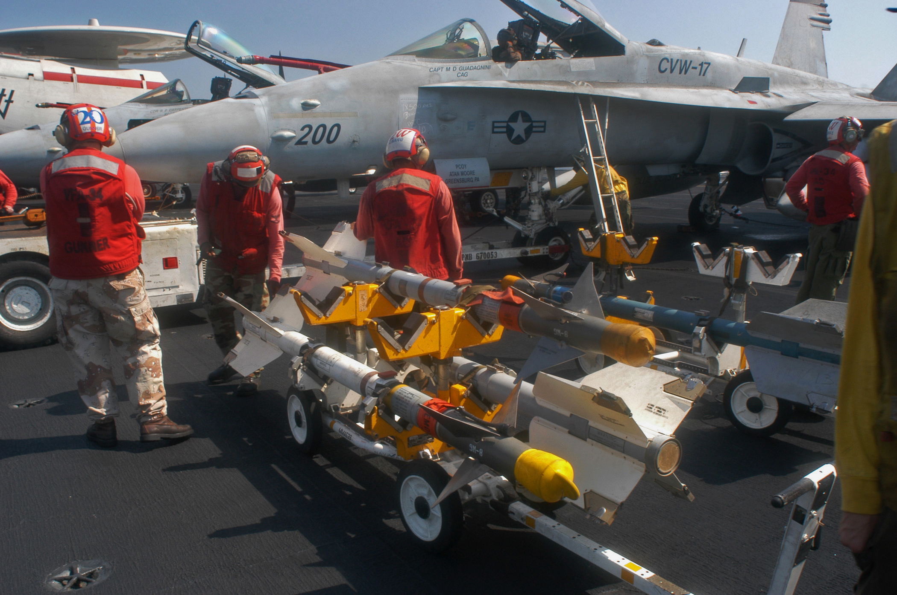
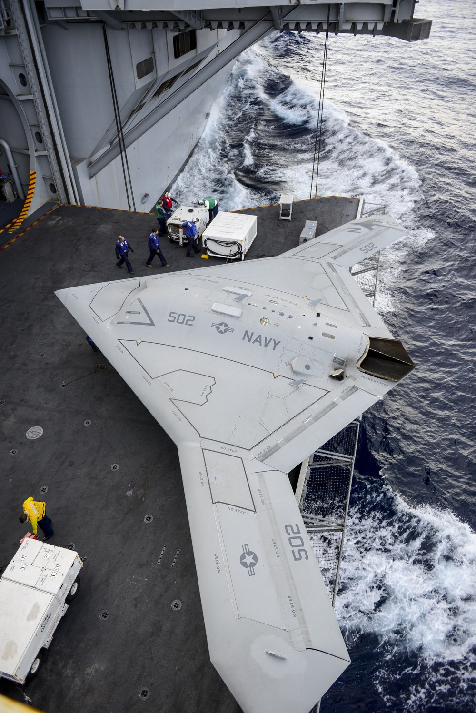
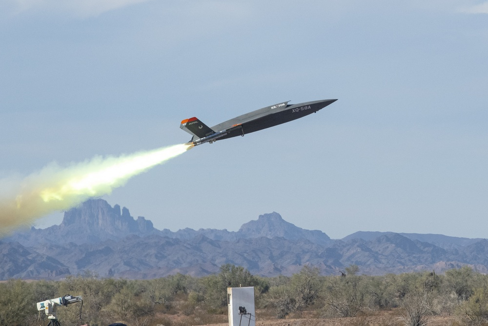

01 / AIM-9 SIDEWINDER01 — A LITTLE ABOUT MEA PERSONAL PAGE / BY OOTWER
CURIOUS ABOUT AEROSPACE & WHAT FLIES
I’m ootwer.
Always looking up.
I spend a lot of time looking at aircraft and reading about how they’re designed. This page is where I keep the ones that catch my eye.
A PERSONAL COLLECTION OF THINGS I FIND FASCINATINGSCROLL TO EXPLORE ↓
02WHY I’M HERE
I’m drawn to the ideas that make people stop and look up.
There’s something about aircraft that keeps pulling me in—the shapes, the clever details, and the stories behind them. I made this page to collect a few favorites and share what I’m learning along the way.
↘03THINGS I’M INTO
AIRCRAFT · DESIGN · TECHNOLOGY ↗PHOTO: JOSHUA KARSTEN / U.S. NAVY · PUBLIC DOMAIN ↗

02 / X-47B UNMANNED AIRCRAFT
03 / ANOTHER VIEW OF THE VALKYRIE04A BIT ABOUT ME
JUST ME, ENDLESSLY CURIOUS.
I like the details
behind the big ideas.
I’m ootwer, and I’m still learning. I like finding the small design choices that make an aircraft stand out, then following the story behind them. I’ll keep adding new finds here as I go.
BACK TO MY INTERESTS ↗01 AIRCRAFT02 DESIGN03 WHAT’S NEXT
05FIND ME ON TIKTOK
MORE AIRCRAFT, MORE OFTEN.
Come say hi
on TikTok.
That’s where I share more of the aircraft and aerospace things I’m into. Follow along at @ootwer.
FOLLOW @OOTWER ↗06GET IN TOUCH